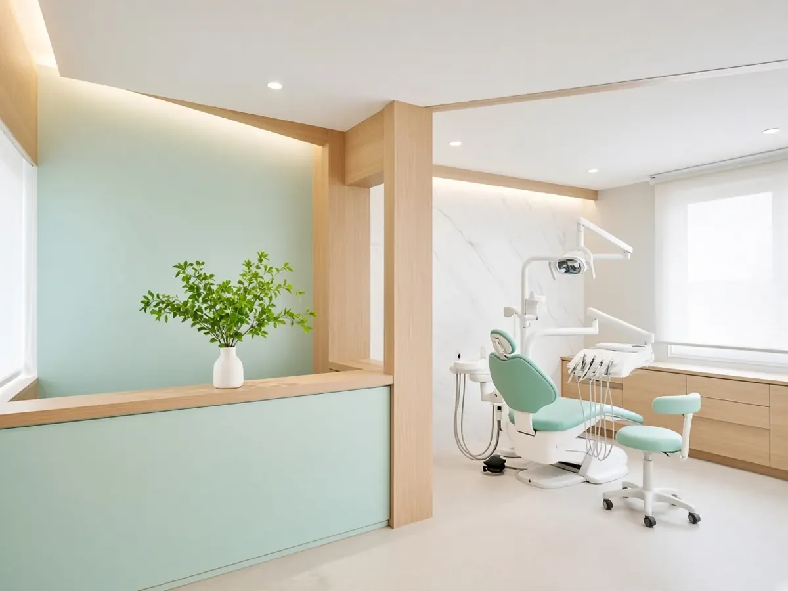

Check-ups, hygiene and cosmetic care in a calm, bright clinic. Evening and Saturday appointments, with clear prices up front.

A full check, scale and polish, with no lecture about flossing.
45 minDentist-led, at-home trays fitted for you. Gentle on sensitive teeth.
2 visitsLonger appointments, signals to pause, and a dentist who explains each step.
Ask when booking